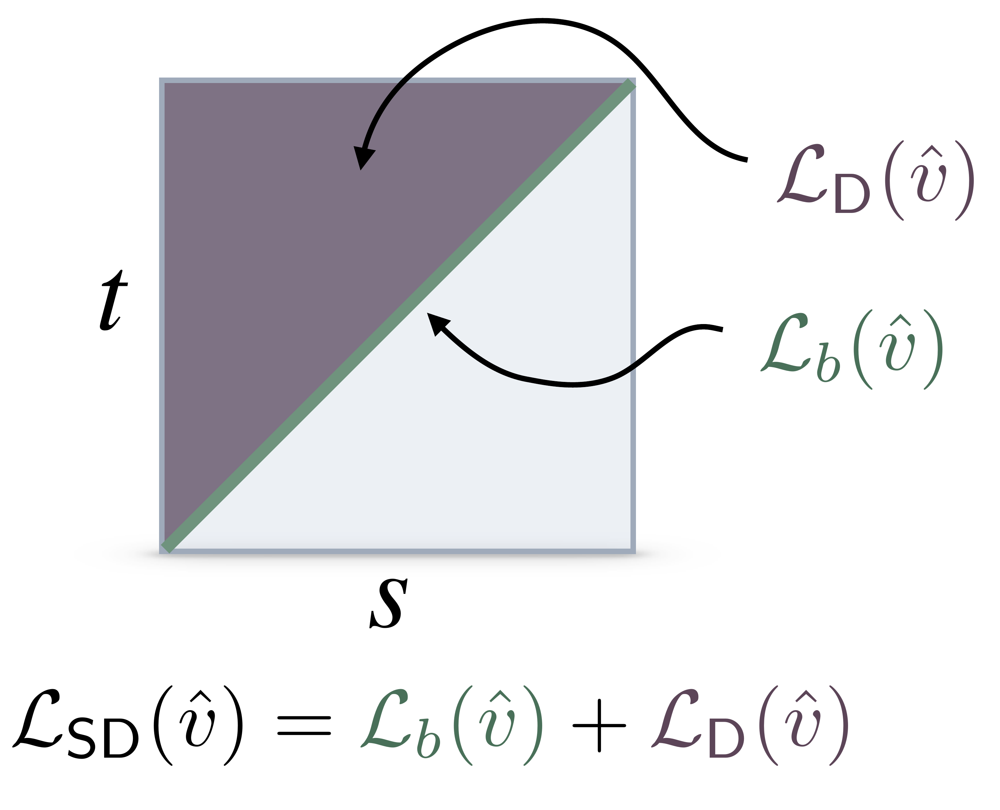

The Tangent Condition
The flow map $X_{s,t}$ satisfies the defining property (or jump condition) that $X_{s,t}(x_s) = x_t$ for any trajectory $x_T$
of the probability flow $\dot{x}_t = b_t(x_t)$. One of our key insights is that the velocity field $b_t$ is implicitly encoded
in the flow map itself:
Lemma (Tangent Condition): Let $X_{s,t}$ denote the flow map. Then,
$$\lim_{s\to t}\partial_t X_{s,t}(x) = b_t(x) \quad \forall t \in [0,1], \; \forall x \in \mathbb{R}^d.$$
To exploit this algorithmically, we parameterize the flow map as
$$X_{s,t}(x) = x + (t-s)v_{s,t}(x)$$
which automatically enforces the boundary condition $X_{s,s}(x) = x$. Taking the limit as $s \to t$:
$$\lim_{s\to t}\partial_t X_{s,t}(x) = \lim_{s\to t}\partial_t[x + (t-s)v_{s,t}(x)] = v_{t,t}(x)$$
Combined with the tangent condition, we obtain the fundamental relation:
$$v_{t,t}(x) = b_t(x).$$
This shows that $v_{t,t}$ on the diagonal recovers the velocity field, which we can learn via standard flow matching.
The challenge is then learning $v_{s,t}$ off the diagonal ($s \neq t$), which we address through self-distillation.
Characterizing the Map
Given the parameterization $X_{s,t}(x) = x + (t-s)v_{s,t}(x)$ and the tangent condition $v_{t,t}(x) = b_t(x)$,
we can characterize the flow map through three equivalent conditions:
Proposition (Flow Map Characterizations): Assume $X_{s,t}(x) = x + (t-s)v_{s,t}(x)$ with $v_{t,t}(x) = b_t(x)$.
Then $X_{s,t}$ is the flow map if and only if any of the following holds:
(i) Lagrangian condition:
$$\partial_t X_{s,t}(x) = v_{t,t}(X_{s,t}(x)) \quad \forall (s,t,x) \in [0,1]^2 \times \mathbb{R}^d$$
(ii) Eulerian condition:
$$\partial_s X_{s,t}(x) + \nabla X_{s,t}(x)v_{s,s}(x) = 0 \quad \forall (s,t,x) \in [0,1]^2 \times \mathbb{R}^d$$
(iii) Semigroup condition:
$$X_{u,t}(X_{s,u}(x)) = X_{s,t}(x) \quad \forall (s,u,t,x) \in [0,1]^3 \times \mathbb{R}^d$$
Each condition provides a different perspective on the flow map.
The Lagrangian follows trajectories forward in time,
the Eulerian describes transport via a partial differential equation,
and the semigroup expresses composition of jumps.
These yield three distinct self-distillation algorithms, as we now discuss.
Algorithmic Framework
Proposition (Self-Distillation): The flow map $X_{s,t}$ is given by $X_{s,t}(x) = x + (t-s)v_{s,t}(x)$
where $v_{s,t}$ is the unique minimizer of
$$\mathcal{L}(\hat{v}) = \mathcal{L}_b(\hat{v}) + \mathcal{L}_{\text{dist}}(\hat{v})$$
Here $\mathcal{L}_b$ is the flow matching loss on the diagonal:
$$\mathcal{L}_b(\hat{v}) = \int_0^1 \mathbb{E}_{x_0,x_1}\left[|\hat{v}_{t,t}(I_t) - \dot{I}_t|^2\right]dt$$
and $\mathcal{L}_{\text{dist}}$ is any of the following three distillation losses:
Lagrangian Self-Distillation (LSD):
$$\mathcal{L}_{\text{LSD}}(\hat{v}) = \int_0^1\int_0^t \mathbb{E}_{x_0,x_1}\left[\left|\partial_t \hat{X}_{s,t}(I_s) - \hat{v}_{t,t}(\hat{X}_{s,t}(I_s))\right|^2\right]ds\,dt$$
Eulerian Self-Distillation (ESD):
$$\mathcal{L}_{\text{ESD}}(\hat{v}) = \int_0^1\int_0^t \mathbb{E}_{x_0,x_1}\left[\left|\partial_s \hat{X}_{s,t}(I_s) + \nabla \hat{X}_{s,t}(I_s)\hat{v}_{s,s}(I_s)\right|^2\right]ds\,dt$$
Progressive Self-Distillation (PSD):
$$\mathcal{L}_{\text{PSD}}(\hat{v}) = \int_0^1\int_0^t\int_s^t \mathbb{E}_{x_0,x_1}\left[\left|\hat{X}_{s,t}(I_s) - \hat{X}_{u,t}(\hat{X}_{s,u}(I_s))\right|^2\right]du\,ds\,dt$$
By converting each characterization above into a training objective, we obtain three self-distillation algorithms
that eliminate the need for pre-trained teachers while maintaining the stability of distillation.

Our plug-and-play approach pairs any distillation objective on the off-diagonal $s \neq t$
with flow matching on the diagonal $s=t$.
Controlling Information Flow via Stopgradient
In practice, it is useful to control the flow of information from the diagonal ($s=t$) to the off-diagonal ($s \neq t$).
We can implement this with the stopgradient operator $\text{sg}(\cdot)$, which treats its argument as constant during backpropagation.
This prevents gradient flow through specific terms, enabling us to simulate the setting where we have a pre-trained teacher.
It is particularly important to avoid backpropagating through the spatial gradient $\nabla \hat{X}_{s,t}$ in the Eulerian loss,
which is often numerically unstable and requires increased memory.
The practical losses we recommend with stopgradient are:
Lagrangian Self-Distillation (LSD):
$$\mathcal{L}_{\text{LSD}}(\hat{v}) = \int_0^1\int_0^t \mathbb{E}_{x_0,x_1}\left[\left|\partial_t \hat{X}_{s,t}(I_s) - \text{sg}(\hat{v}_{t,t}(\hat{X}_{s,t}(I_s)))\right|^2\right]ds\,dt$$
Eulerian Self-Distillation (ESD):
$$\mathcal{L}_{\text{ESD}}(\hat{v}) = \int_0^1\int_0^t \mathbb{E}_{x_0,x_1}\left[\left|\partial_s \hat{X}_{s,t}(I_s) + \text{sg}(\nabla \hat{X}_{s,t}(I_s)\hat{v}_{s,s}(I_s))\right|^2\right]ds\,dt$$
Progressive Self-Distillation (PSD):
$$\mathcal{L}_{\text{PSD}}(\hat{v}) = \int_0^1\int_0^t \mathbb{E}_{p_\gamma}\mathbb{E}_{x_0,x_1}\left[\left|\hat{v}_{s,t}(I_s) - \text{sg}\left((1-\gamma)\hat{v}_{s,u}(I_s) + \gamma\hat{v}_{u,t}(\hat{X}_{s,u}(I_s))\right)\right|^2\right]ds\,dt$$
Above, we wrote the PSD loss entirely in terms of $\hat{v}$, and introduced $\gamma \in [0, 1]$ defining the intermediate point $u = \gamma s + (1-\gamma) t$. See the appendix of the paper for further details.
Recovering Known Methods: We show in the appendix of our paper that all known algorithms for training consistency models
(including consistency training, consistency distillation, shortcut models, align your flow, and mean flow)
can be recovered via an appropriate choice of stopgradient placement in our framework.